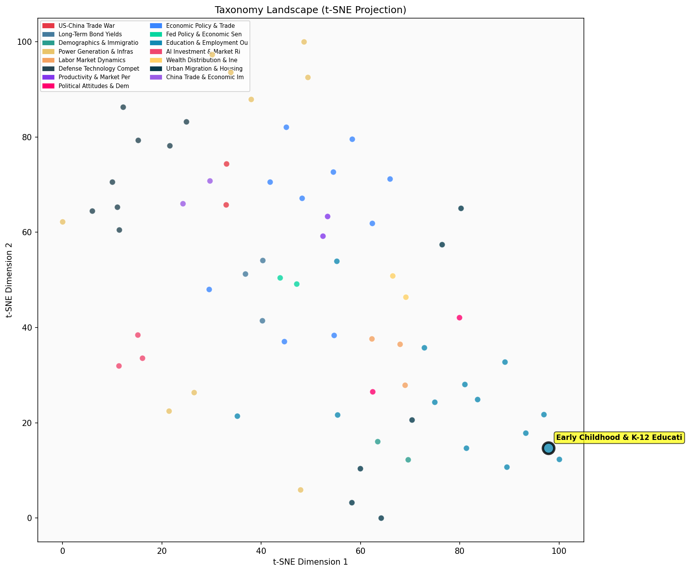

Description
This subcluster examines specific educational programs and interventions targeting children from early childhood through K-12, analyzing their effectiveness and long-term outcomes. Articles feature longitudinal studies, randomized controlled trials, and meta-analyses evaluating initiatives like universal pre-K, charter schools, early childhood education programs, and specialized academic interventions. Research draws from education policy experiments, Department of Defense schools, and landmark studies like Perry Preschool. Unlike sibling clusters focusing on outcomes measurement or demographic disparities, this subcluster emphasizes program design and implementation effectiveness, often revealing mixed results and challenging conventional assumptions about educational interventions' benefits.
Similarity to All 70 Subclusters
Each cell represents a subcluster. Color intensity shows similarity (blue=low, red=high). Black line marks current subcluster position.
Relationship to Primary Clusters
Average similarity to each of the 15 primary clusters. Larger area = stronger relationship to that cluster.
Taxonomy Landscape
All 70 subclusters positioned by similarity (t-SNE). Current subcluster highlighted with label. Click to enlarge.
Network Connections
Current subcluster at center, connected to related subclusters. Line thickness = similarity strength.
Most Representative Articles
-
1. Boston's universal pre-K study reveals mixed outcomes, raising questions about its efficacy. Benefit
-
2. Despite the belief that lower education expenditures per student contribute to race and income gaps,
-
3. School integration is linked to stronger outcomes in adulthood for children of all races, as evidenc
-
4. Research by @MichaelQMcShane at @AEI finds weak correlation btw test score improvements & long-term
-
5. Attending elite exam schools in Boston & New York yields only scattered academic gains, with most st
Edge Cases (Boundary Articles)
-
1. Music training cognitive benefits debunked: Meta-analysis (n=6,984, 254 studies) shows zero effect sThis article is borderline because while it examines music training as an educational intervention, it focuses primarily on debunking cognitive benefits rather than analyzing the effectiveness of educational programs or their implementation in K-12 settings. The meta-analysis is more concerned with cognitive enhancement claims than with educational outcomes, making it more aligned with cognitive research than educational intervention studies.
-
2. Research from @MichaelBakerCA finds that Quebec's universal childcare policy boosted female labor suThis article is borderline because while it mentions childcare policy, it primarily focuses on the economic and labor market impacts of universal childcare rather than examining educational interventions or programs for children. The content is more aligned with policy analysis of work-family balance and cost-benefit economics rather than educational effectiveness or child development outcomes that would be central to the Early Childhood & K-12 Educational Interventions cluster.
-
3. Data reveals public-school teachers earn 16% more than those in nonreligious private schools, challeThis article is borderline because while it discusses K-12 education, it focuses on teacher compensation and wage comparisons rather than specific educational programs or interventions targeting students and their outcomes. The content is more aligned with employment and wage analysis (hence the higher similarity to the alternative cluster) rather than examining the effectiveness of educational interventions for children.
Original Dendrogram